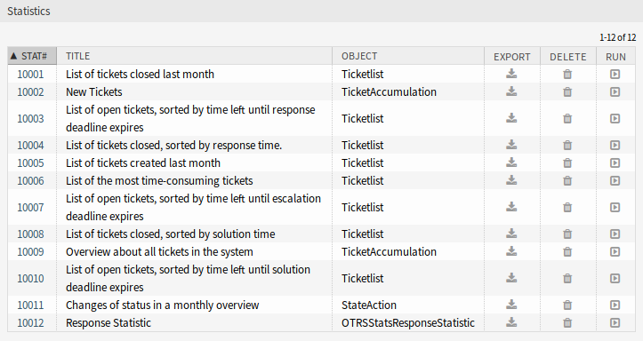

统计¶
安装本软件包后，统计 屏幕中将提供一个新的统计信息和两个新的动态列表对象。
新的统计¶
安装本软件包后，统计 小部件中将提供新的统计信息。

统计概览屏幕
- 响应统计
- 这种静态类型统计可以计算响应模板在一个时间帧上使用了多少次。结果可以按时间段和队列进行筛选。
要使用新统计：
- 在 统计 小部件中搜索 响应统计。
- 单击最后一列中的 立即运行 图标。
- 选择要包含在统计中的时间范围和队列。
- 生成你的统计数据。

响应统计设置
新的动态对象¶
安装本软件包后，将向系统添加两个新的动态对象。
队列停留时间统计¶
您可以使用此统计模块计算队列的工单停留时间。此统计还考虑了工单的关闭时间。此计算时间不会添加到停留时间或基于工作时间的停留时间。仅当您为队列配置了日历时，才会显示基于工作时间的停留时间。
可用的列有：
- 编号：工单清单的编号。
- Ticket#:工单编号。
- 工单ID: 工单的内部ID。
- 创建日期：工单创建日期。
- 修改日期：工单的最后修改日期。
- 关闭时间：工单的最后关闭日期。
- 状态：工单的当前状态。
- 类型：工单的当前类型。
- 队列：基于历史记录条目的当前队列。
- 队列加入时间：基于历史记录条目的日期（工单在此队列中创建、在打开时移动到此队列中或在此队列中重新打开）。
- 队列离开时间：基于历史记录条目的日期（工单在此队列中关闭或在打开时移出此队列）。 如果工单在报告时间段结束时仍处于打开状态且在此队列中，则为空。
- 停留时间（秒）：工单停留在队列中的持续时间的计数，基于加入和离开时间。工单关闭的时间将不计算在内。
- 休息时间（HH:MM:SS）：工单停留在队列中的持续时间的计数，格式为小时、分钟和秒。
- 停留时间（工作时间，秒）：根据系统配置中配置的队列工作日历，工单停留在队列中的持续时间计数（如果未配置日历，则此字段将为空）。
- 停留时间（工作时间，HH:MM:SS）：根据系统配置中配置的队列工作日历格式化的工单停留在队列中的持续时间计数（如果未配置日历，则此字段将为空）。
- 紧急度：工单的当前紧急度。
- 影响度：工单的当前影响程度。
要使用新的动态对象：
- 创建一个新的 动态列表 统计信息。
- 选择动态对象
OTRSStatsQueueRestingTime。 - 根据您的期望配置剩余选项。
- 使用打印或CSV输出运行统计。
- 将显示符合限制条件的所有工单。如果在报告开始之前创建了其它工单，并且在报告时间范围内仍处于打开状态，则将显示这些工单。
队列工作时间统计¶
此统计信息是修改后的工单列表，用于计算每个队列的工作时间。 此修改的工单列表统计信息包含X轴的3个新列。 通常，新3列的时间是根据工单未处于关闭、移除或合并状态类型的时间计算的。
示例队列 Misc：
- 队列 Misc 时间包含服务人员对工单进行处理的时间。
- 队列 Misc 工作时间包含服务人员根据队列 Misc 的工作日历处理工单的时间。
- 队列 Misc 有效时间包含服务人员在队列 Misc 中为工单设置的时间单位。每个服务人员的值按姓氏和名字显示在同一列中(逗号分隔)。
要使用新的动态对象：
- 创建一个新的 动态列表 统计信息。
- 选择动态对象
OTRSStatsQueueWorkingTime。 - 单击 X轴 按钮，然后选择要显示工作时间或时间的队列。
- 设置统计信息以完成配置所需的所有其它限制和排序选项。
- 生成你的统计数据。